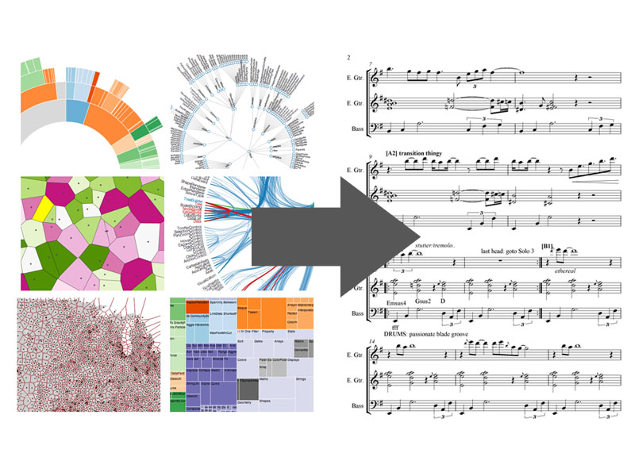
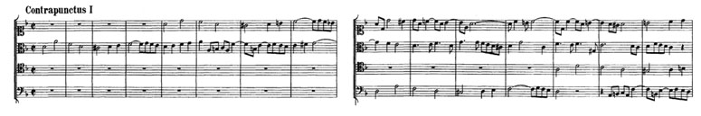

MIDaS: Mobile-Music Instrument Designer and Stage
David Su
http://www.columbia.edu/~dds2135/midas
DevFest 2013
David Su
http://www.columbia.edu/~dds2135/midas
DevFest 2013

http://www.columbia.edu/~dds2135/midas/demo.html
http://youtu.be/h5cI-56ureo

Thank you!
David Su
dds2135@columbia.edu